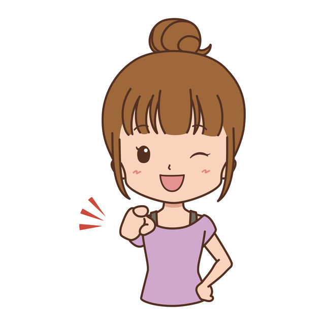
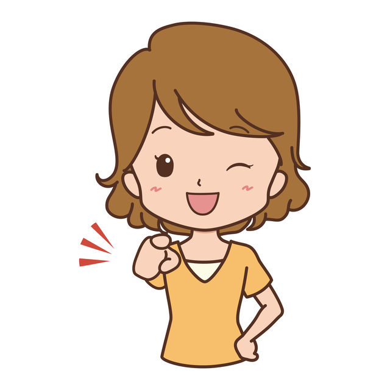
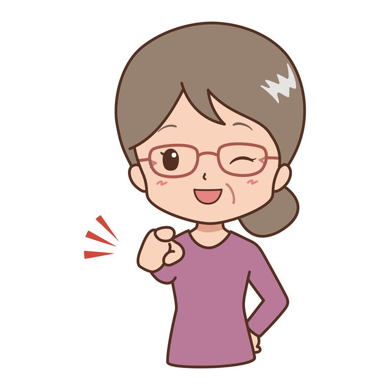
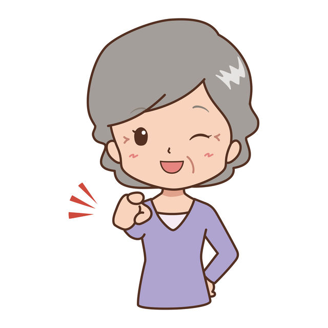

이 페이지에서 살펴볼 내용
생애 주기별 건강관리
남성과는 달리 여성은 일생에 따른 자연스러운 변화를 많이 겪습니다.
남성과는 달리 여성은 일생에 따른 자연스러운 변화를 많이 겪습니다.
나이에 따라 몸과 마음이 호르몬의 영향을 받아 변화해 갑니다. 그래서 같은 병이라 하더라도 인생의 시기에 따라 증상의 정도도 달라지고, 특정 시기에만 나타나는 불편감이 있습니다.
흔히 여성의 건강사이클은 4단계로 나누어 설명합니다. 4단계는 보통 여성호르몬의 변화에 따라, 그리고 나이가 들면서 누구나 겪는 과정이죠.
그 과정에서 여성 호르몬의 변화와 함께 어떻게 몸이 변화해 가는지 간단하게 살펴보겠습니다.
사춘기 ~18세전
사춘기는 ‘이차성징이 나타나고 생식능력을 획득하는 시기입니다.
다시 말해 여성에게는 ‘초경이 시작되서 월경이 안정되기까지의 기간'으로, 구체적으로는 8-9세에서 17-18세까지의 시기
여성호르몬의 하나인 에스트로겐(estrogen 난포호르몬)이 조금씩 분비되기 시작하며, 피하지방으로 몸이 부드러워지며, 가슴이 커지고, 음모, 액모가 나오면서, 성인 여성의 몸으로 한걸음씩 다가가는 시기죠.
아직 에스트로겐을 만드는 난소의 기능이 미숙하기 때문에 월경주기와 기간은 불안정하며, 자궁의 발육도 미숙해서 월경통, 월경주기이상 등(기능성월경곤란증)도 일어나기 쉽습니다. 사춘기 후반정도가 되어 난소와 자궁이 어느정도 성숙하면 월경주기도 안정되고, 월경통도 가벼워지게 됩니다. (스트레스와 자궁내막증 등의 원인으로 생리통이 계속되는 경우도 있습니다.)
또한 이 시기는 몸 뿐 아니라 정신적으로도 크게 성장합니다.
마음과 몸의 성장속도가 다른 경우가 많습니다. 학업에 지나치게 마음을 쓰다보면
건강 균형이 무너지기 쉬워 마음의 문제가 신체의 질병으로 변화하기 쉽고, 주위의 관심과 사랑이 많이 필요한 시기입니다.
사춘기에 들어서는 여성은
일반적으로 의학적인 지식도 부족하고, 일반 상식도 부족한 상태이기 때문에 가족들의 적극적인 소통과 대화가 필요합니다.
불편한 부분을 혼자 고민하기 보다는 주변 가족의 도움을 받아 성인이 되기 전까지 바른 의학 지식을 갖추어나가는 것이 무엇보다 중요하겠죠.

사춘기 질환
기능성월경곤란증(월경통, 월경불순), 성조숙증, 여드름, 습진, 빈혈, 자궁내막증, 월경전증후군, 성병, 거식증 또는 폭식증, 은둔형 외톨이, 과민성장증후군, 불안증후군, 원형탈모증 등
성숙기 18세~45세
18-19세 ~ 44~45세정도까지의 시기가 성숙기 입니다.
여성호르몬의 하나인 에스트로겐(난포호르몬)의 분비가 잘 되고, 생리주기가 안정되며, 심신이 안정되는 시기라고 할 수 있겠지요.
몸가 여성스러워질 뿐 아니라, 결혼, 임신, 출산, 육아와 직장생활, 취미활동 등에도 적극적으로 참여해나가는, 전체적인 삶 가운데 일상이 바쁜 시기입니다.
성숙기의 전반기는 몸이 임신과 출산에 가장 적합한 상태로 되면서, 체력도 충분하기에 훨씬 더 밀도있게 인생을 즐길 수 있습니다.
하지만 건강에 무신경하게 무리해서 모델, 연예인처럼 같은 마른 몸매를 목표로 하며 엉뚱한 다이어트를 하거나, 일, 가정을 완벽하게 유지하기 위해 노력을 지나치게 하면서 몸과 마음에 부담이 가는 상태가 계속된다면 호르몬 밸런스가 무너져, 나이를 거듭할 수록 컨디션 저하의 원인이 될 수 있으므로 조심해야 합니다.
이와 동시에 자궁경부암은 20세부터 검진이 필요합니다.가슴 주위에 덩어리 또는 위화감(불편감)이 있으면 유방암검진도 규칙적으로 받는 것이 좋습니다.
한편, 성숙기의 후반기는 직장, 사회에서 책임있는 일을 맡게 되거나, 일과 육아를 병행해야 하는 바쁜 시기입니다.
다만, 더 바빠진 생활과는 정반대로 난소기능은 조금씩 쇠약해져가고, 여성호르몬인 에스트로겐의 분비가 저하되어 갑니다. 그러면서 유방암, 자궁암, 자궁근종이나, 비만, 당뇨병 등의 생활습관병에 걸리기 쉬워집니다. 이 시기가 되면 정기적으로 건강진단을 받는 것도 중요합니다. 외관상의 변화로는 조금씩 주름이 생기며, 기미, 흰머리가 나오거나 탈모도 생기게 됩니다. 이와 같은 몸의 변화가 신체 전반의 노화로 바로 직결되는 것은 아닙니다만 성숙기 후반에 들어가면 건강 관리를 가장 우선시 해야 그 후의 삶을 보다 젊게, 더 건강하게 보낼 수 있겠죠.

성숙기 질환
냉증(수족냉증), 자율신경실조증, 화병, 피로, 변비, 두통, 불임, 입덧, 산후회복불량(산후풍), 산후관절증, 난임, 유산, 임신성고혈압, 산후우울증, 자궁근종, 자궁내막증, 성병, 자궁암, 유방암 등
갱년기 45세~55세
보통 폐경전후 5년정도의 시기로, 45세-55세 정도까지를 갱년기라고 정의합니다.
단, 개인차가 매우 크고, 30대 후반부터 시작하는 경우, 50대 이후부터 시작하는 경우 등 다양합니다.
요즘은 환경, 사회적인 요인으로 조기폐경에 이르는 경우도 많이 보이며, 그 경우도 조기 갱년기의 범주에 들어갑니다.
난소의 기능은 여성의 성숙기 후반부터 조금씩 떨어집니다만, 폐경이 되는 40대 중후반이후 기능저하가 뚜렷해집니다.
그 결과, 여성 호르몬의 하나인 에스트로겐(난포호르몬)의 분비량이 줄어들고 결국 점차 분비되지 않게됩니다.
이러한 몸의 변화가 안면홍조, 발한(과도한땀분비), 불안초조, 심장두근거림, 불면, 우울증 같은 갱년기 증상(폐경)을 일으키는 것입니다. 증상도 사람에 따라서 무거운 경우와 가벼운 경우도 있습니다.
염두할 부분은 '갱년기라고 크게 신경쓰지 않으면서, 적극적으로 이전과 같은 삶을 사는 것'이 갱년기를 편하게 보내는 중요한 포인트입니다.
여성호르몬인 에스트로겐은 임신과 출산, 여성다운 몸을 만드는 것과 같은 작용이외에도 골밀도를 유지하고, 콜레스테롤을 낮추는 등 많은 기능을 가지고 있습니다.
따라서 에스트로겐의 분비가 부족하면 골다공증, 고혈압, 이상지질혈증, 비만, 암 등의 병에 걸리기 쉬워지므로, 건강검진을 정기적으로 받는 것이 좋습니다.
또한, 성숙기의 후반부터 시작된 노화에 의한 변화로 피부가 느슨해져 주름이 깊어지며, 기미와 입가의 털이 진해지는 등 몸의 변화가 한층 더 나아가게 됩니다.

갱년기 질환
냉증(수족냉증), 갱년기증상(우울, 홍조 등), 화병, 조기난소기능부전(조기폐경), 방광염, 비만, 당뇨병, 빈뇨나 요실금, 우울증, 자율신경실조증, 피부가려움증, 골다공증, 고혈압, 심장병, 유방암, 자궁암, 난소암 등
노년기 60세~
폐경이 지난 50대 후반- 60대 초중반 이후를 노년기라고 합니다.
최근에는 이 시기가 적극적인 건강관리로 개인차가 심하고, 전반적으로는 점차 늦어지는 추세입니다.
노년기를 맞이하면 여성호르몬의 하나인 에스트로겐(난포호르몬)의 분비가 없어지면서, 남자와의 차이가 없어집니다.
따라서, 지금까지는 남성에게 많은 생활습관병(고혈압, 고지혈증, 당뇨병), 암, 뇌졸중(중풍), 치매, 골다공증 등의 질병에도 걸리기 쉬워집니다.
특히 골다공증과 치매는 골절 등에 의해 노쇠로 연결되게 쉽기 때문에 심각할 수 있습니다. 치매(인지증)의 경우, 본인 알아차리기 어려운 부분이 있기 때문에, 가족이나 주위의 적극적인 관심과 주의가 필요합니다.
이밖에 시력, 청력, 근력이 저하되어 오거나, 지각이 나빠지고, 기미, 주름, 흰머리가 늘어나 머리카락의 양이 줄어드는 등 명백하게 달라지는 부분이 있습니다.
하지만, 노년기에는 상상력과 판단력, 경험을 바탕으로 하는 능력은 젊은 사람보다 더 풍부해집니다.
퇴직 후 자녀를 독립시킨 후 젊은 시절에는 할 수 없었던 꿈을 실현하고, 새로운 취미를 시작하고 새로운 곳으로 이사하여 삶을 시작하는 등 노년기를 제2의 인생으로 적극적으로 보내는 사람들이 점차 증가하고 있습니다.

노년기 질환
당뇨, 변비, 빈뇨, 요실금, 피부가려움증, 식욕부진, 피로, 우울증, 고혈압, 뇌혈관질환(뇌경색, 뇌출혈-중풍), 심장질환(심근경색, 협심증) 각종암, 골다공증, 치매, 백내장, 노인성난청 등
이 안내는 건강에 대한 이해를 돕는 참고 정보입니다. 증상과 질환에 대한 정확한 판단은 의료진의 진료가 필요합니다.